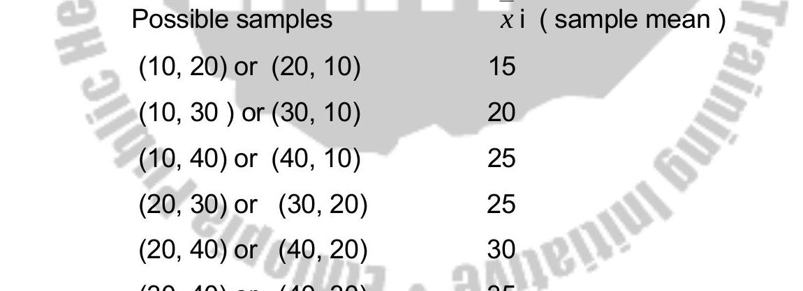

APPENDIX
Statistical Tables (Continued)
Table A3: Critical Values of the t-Distribution
This table gives the critical values $t_{\alpha, df}$ such that the area in the upper tail of the t-distribution with $df$ degrees of freedom is equal to $\alpha$.
| df | $\alpha$=0.10 | $\alpha$=0.05 | $\alpha$=0.025 | $\alpha$=0.01 | $\alpha$=0.005 |
|---|---|---|---|---|---|
| 1 | 3.078 | 6.314 | 12.706 | 31.821 | 63.657 |
| 2 | 1.886 | 2.920 | 4.303 | 6.965 | 9.925 |
| 3 | 1.638 | 2.353 | 3.182 | 4.541 | 5.841 |
| 4 | 1.533 | 2.132 | 2.776 | 3.747 | 4.604 |
| 5 | 1.476 | 2.015 | 2.571 | 3.365 | 4.032 |
| 6 | 1.440 | 1.943 | 2.447 | 3.143 | 3.707 |
| 7 | 1.415 | 1.895 | 2.365 | 2.998 | 3.499 |
| 8 | 1.397 | 1.860 | 2.306 | 2.896 | 3.355 |
| 9 | 1.383 | 1.833 | 2.262 | 2.821 | 3.250 |
| 10 | 1.372 | 1.812 | 2.228 | 2.764 | 3.169 |
| 11 | 1.363 | 1.796 | 2.201 | 2.718 | 3.106 |
| 12 | 1.356 | 1.782 | 2.179 | 2.681 | 3.055 |
| 13 | 1.350 | 1.771 | 2.160 | 2.650 | 3.012 |
| 14 | 1.345 | 1.761 | 2.145 | 2.624 | 2.977 |
| 15 | 1.341 | 1.753 | 2.131 | 2.602 | 2.947 |
| 16 | 1.337 | 1.746 | 2.120 | 2.583 | 2.921 |
| 17 | 1.333 | 1.740 | 2.110 | 2.567 | 2.898 |
| 18 | 1.330 | 1.734 | 2.101 | 2.552 | 2.878 |
| 19 | 1.328 | 1.729 | 2.093 | 2.539 | 2.861 |
| 20 | 1.325 | 1.725 | 2.086 | 2.528 | 2.845 |
| 21 | 1.323 | 1.721 | 2.080 | 2.518 | 2.831 |
| 22 | 1.321 | 1.717 | 2.074 | 2.508 | 2.819 |
| 23 | 1.319 | 1.714 | 2.069 | 2.500 | 2.807 |
| 24 | 1.318 | 1.711 | 2.064 | 2.492 | 2.797 |
| 25 | 1.316 | 1.708 | 2.060 | 2.485 | 2.787 |
| 26 | 1.315 | 1.706 | 2.056 | 2.479 | 2.779 |
| 27 | 1.314 | 1.703 | 2.052 | 2.473 | 2.771 |
| 28 | 1.313 | 1.701 | 2.048 | 2.467 | 2.763 |
| 29 | 1.311 | 1.699 | 2.045 | 2.462 | 2.756 |
| 30 | 1.310 | 1.697 | 2.042 | 2.457 | 2.750 |
| 40 | 1.303 | 1.684 | 2.021 | 2.423 | 2.704 |
| 60 | 1.296 | 1.671 | 2.000 | 2.390 | 2.660 |
| 120 | 1.289 | 1.658 | 1.980 | 2.358 | 2.617 |
| $\infty$ (Z) | 1.282 | 1.645 | 1.960 | 2.326 | 2.576 |
Note: For a two-tailed test with significance level $\alpha$, use the critical value corresponding to an upper tail area of $\alpha/2$. For example, for a two-tailed test with $\alpha=0.05$ and df=10, use the value in the $\alpha=0.025$ column, which is 2.228.